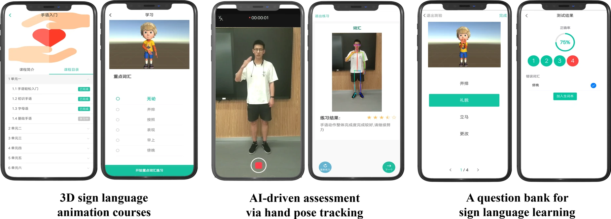

Sign Language Learning Platform
I led a five-person team that built a platform for demonstrating signs and giving learners feedback during practice. A sensor glove captured finger movements, which we processed with a Kalman filter before animating a Unity character. During practice, OpenPose tracked hand positions from the camera. The clips show three parts of the original platform: demonstration, practice feedback, and vocabulary review.

Original platform recording
Watch a 3D character demonstrate a sign, then study the movement before trying it yourself.